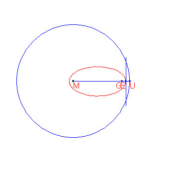
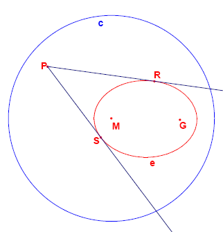

A definition for an ellipse is:
Given a circle $c$ with centre $M$ and radius $r$ and a point $G$ such that $d(G,M) \lt r$, the locus of the points that are equidistant from $c$ and $G$ form an ellipse.

Given are the points $M(-2000,1500)$ and $G(8000,1500)$.
Given is also the circle $c$ with centre $M$ and radius $15000$.
The locus of the points that are equidistant from $G$ and $c$ form an ellipse $e$.
From a point $P$ outside $e$ the two tangents $t_1$ and $t_2$ to the ellipse are drawn.
Let the points where $t_1$ and $t_2$ touch the ellipse be $R$ and $S$.

For how many lattice points $P$ is angle $RPS$ greater than $45$ degrees?
No test cases available.